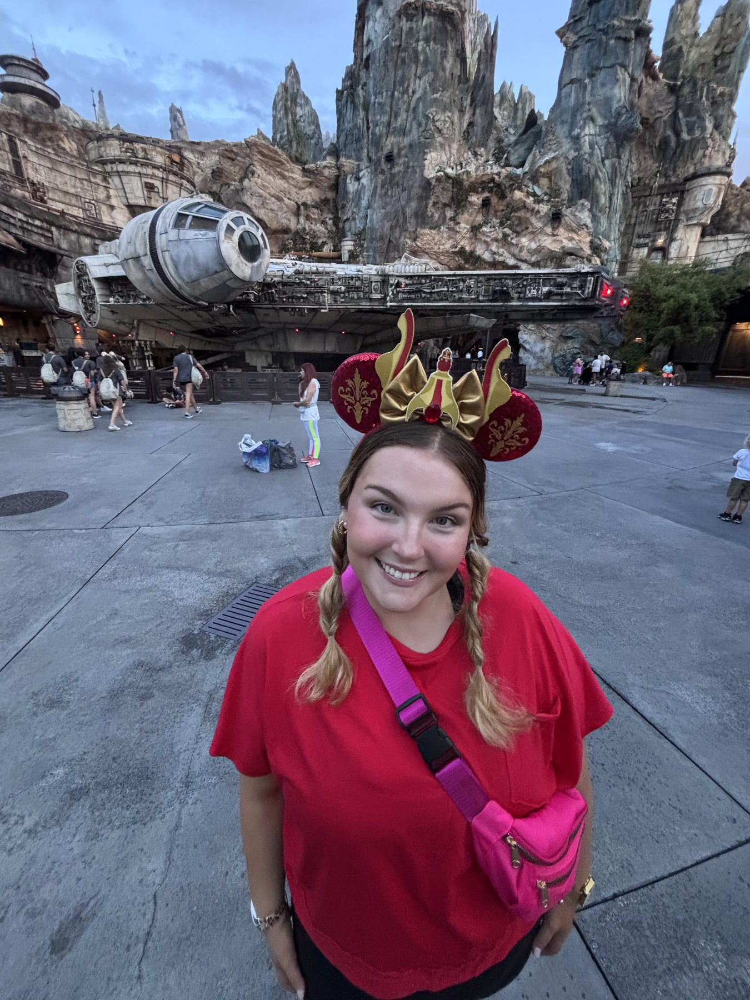
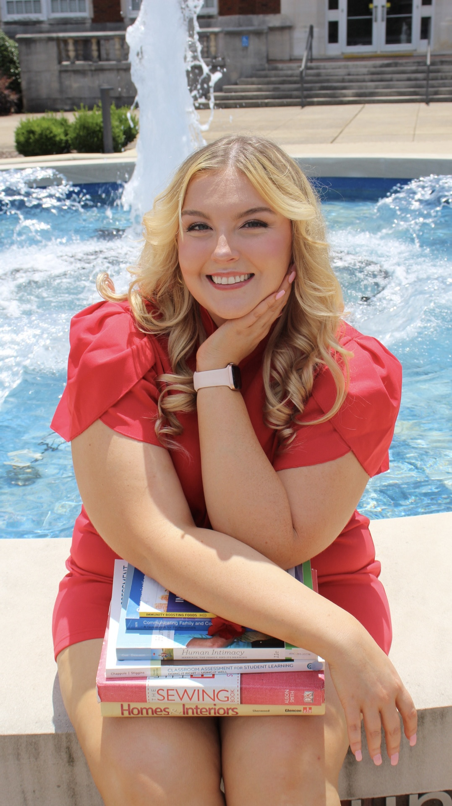
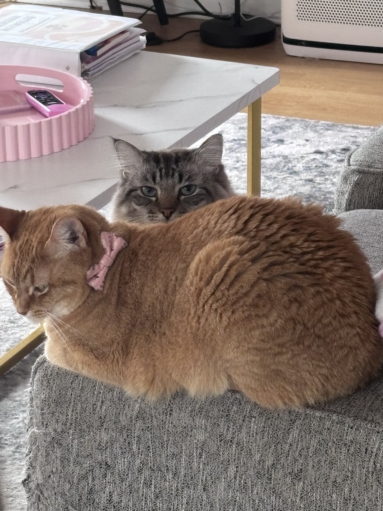
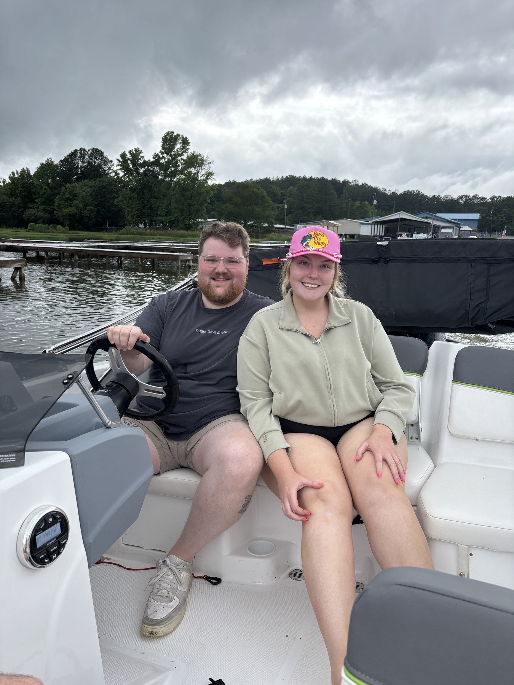

Disney Magic
Her Happy Place
Magic Kingdom, Rapunzel, park snacks, and theme-park rides all have a special place in Madi's heart.
Teacher • Wife • Cat Mom • Disney Fan
“Blonde, pink, and sunshiny.”
Madi brings a bright personality and a strong sense of purpose to everything she does. Her story is filled with meaningful work, favorite people, Disney magic, coffee-fueled motivation, and plenty of humor.
Discover Her Story
A Few Favorite Things
Her happiest moments combine adventure, connection, and the comforts of home.

Magic Kingdom, Rapunzel, park snacks, and theme-park rides all have a special place in Madi's heart.

Whether traveling or cheering from the stands, Madi treasures experiences shared with the people she loves.

Madi loves that cats are comforting companions who are affectionate on their own terms.
Proud Accomplishment
Within two years, Madi completed her master's degree, her Ed.S. test, and her National Boards work. That achievement reflects her determination, her commitment to education, and the energy she brings to her career as a teacher.

Looking Ahead
Madi dreams of retiring from teaching and living near the beach. Her ideal future includes warm weather, a pond, ducks, and perhaps a cow, chickens, or pigs—a relaxed life surrounded by animals and the people she loves.

Always Herself
Madi may be focused and hardworking, but she always leaves room for laughter, funny photos, and stories worth remembering.
Explore Madi's hobbies →